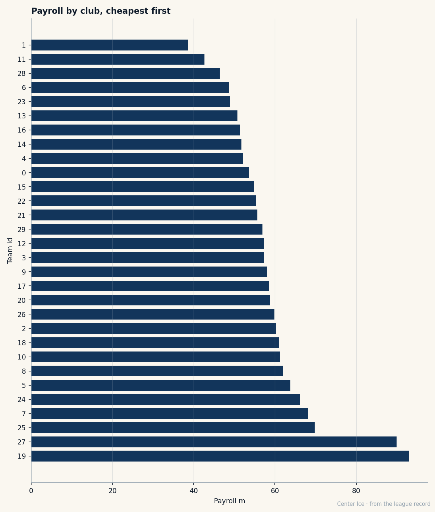

VAN
VANThe Cheapest Room in Hockey: 13 Men at Morale 100, and the July That Takes Half of Them
Markus Naslund won the Hart for $4.40M on the second-cheapest payroll in the league. Every man in the Vancouver room loves it there. Every one of them is free in July.
 Carol BinghamFeatures writer · Rinkside
Carol BinghamFeatures writer · RinksideThe Bureau's Development Index has him flat this week. Zero change. The Book reads 91, the base says 92, and the gap between those two is a night he did not quite reach. Three games, 4 goals, 2 assists, 21.3 minutes a night. At 32,  Markus Naslund87 is the same man who scored 74 goals last March, who raised the Hart at the end of a 138-point season, who wears 19 in a room where the payroll sits at $46.36M and every man at morale 100 is leaving in eight months.
Markus Naslund87 is the same man who scored 74 goals last March, who raised the Hart at the end of a 138-point season, who wears 19 in a room where the payroll sits at $46.36M and every man at morale 100 is leaving in eight months.
Vancouver is the second-cheapest club in the league. Only Atlanta spends less, at $38.53M against the Canucks' $46.36M. The revenue is $32.52M, the profit $23.20M, the ticket $80. The room works. Everyone in it knows it works. And the Bureau's Morale Scale, which measures how a man feels about the room he is in, has every single one of the 13 Canucks whose contracts expire this July at 100. Not 94, not 96. All 100.

Those 13 men carry salaries that total more than half of Vancouver's $46.36M payroll. The same shape as the cliff in Denver, where seven expiring men sit on a $68.11M roster, except the Canucks' room is thinner at the top and wider at the bottom. Colorado can survive losing four stars if the money stays. Vancouver has to decide which half of a 13-man room it can keep when the market opens in July.
Naslund makes $4.40M. That is the number the Hart Trophy winner carries, the number a man who scored 74 goals carries in a league where the top centers make three times that.  Ed Jovanovski84, the defenseman who plays 25 minutes a night and makes the third pair look like the first, carries $2.30M.
Ed Jovanovski84, the defenseman who plays 25 minutes a night and makes the third pair look like the first, carries $2.30M.  Mattias Ohlund80, 29 years old, 84 overall, $2.60M.
Mattias Ohlund80, 29 years old, 84 overall, $2.60M.  Trevor Linden80, the man who was the face of this franchise before Naslund arrived, takes $3.80M.
Trevor Linden80, the man who was the face of this franchise before Naslund arrived, takes $3.80M.  Brendan Morrison79, 83 overall, the center who set up half of last year's goals, makes $4.33M.
Brendan Morrison79, 83 overall, the center who set up half of last year's goals, makes $4.33M.
And below them, the twins. Daniel Sedin, 75 overall, $0.90M. Henrik Sedin, 73 overall, $0.90M. Entry-level money on two men the club drafted in the first round, both from Örnsköldsvik, the same town that produced the man wearing 19 on this roster's top line.
The town that produced all of this
Örnsköldsvik gave the world  Peter Forsberg95 and Markus Naslund within 10 days of each other in the summer of 1973. It gave Vancouver the Sedins. The equipment manager at Modo Hockey, the club where all of them learned to skate, designated Naslund with 19 when he was 17, and he never saw a reason to change.
Peter Forsberg95 and Markus Naslund within 10 days of each other in the summer of 1973. It gave Vancouver the Sedins. The equipment manager at Modo Hockey, the club where all of them learned to skate, designated Naslund with 19 when he was 17, and he never saw a reason to change.
Naslund was drafted 16th overall by Pittsburgh in 1991, two years before he left Sweden. He spent two seasons back home with Modo, putting up 39 points in his second, then walked into free agency because his contract ran out and the Penguins had not moved. He came to Vancouver, found a line, found a room, and did not leave. The record opens with him already here, before December 2004, which means the desk does not know the arrival date. But he is still here in October 2005, at 32, with a 138-point season behind him and a contract that will not survive July.
The math that does not close
Vancouver earns $32.52M in revenue and spends $46.36M on hockey salaries. The club clears $23.20M in profit per game, which means ownership covers the gap from somewhere else. Attendance is 14184 on an $80 ticket. That is not a rich building. That is a building that runs on loyalty and cheap seats, and the loyalty runs both ways.
The question the room does not ask itself is simple: if all 13 men at morale 100 walk, and the club cannot replace them at a $46.36M payroll, does the room survive the summer?  Todd Bertuzzi89, 93 overall, the best player on this roster, is the one man who is not on this list. His contract does not expire this year.
Todd Bertuzzi89, 93 overall, the best player on this roster, is the one man who is not on this list. His contract does not expire this year.  Dan Cloutier86 at 90 overall is not here either. The two men who anchor the top of this lineup are signed beyond the cliff. The rest of the room, the men who fill the second and third lines, who take the defensive assignments, who kill the penalties, is the room at 100.
Dan Cloutier86 at 90 overall is not here either. The two men who anchor the top of this lineup are signed beyond the cliff. The rest of the room, the men who fill the second and third lines, who take the defensive assignments, who kill the penalties, is the room at 100.
Naslund, Jovanovski, Linden, Ohlund, Morrison: five players at 83 or above, all expiring, all content, all walking in the same direction. The Bureau's Book has them at 91, 88, 84, 84, and 83 respectively. That is the core of the second-cheapest room in hockey, and in eight months every one of those contracts is on the open market.
What the Book says about 32
Naslund's potential is 53. Potential on the Book is the likelihood of development, and at 32, with a career 92 base, the Bureau is telling you this is who he is and he is not going to become someone else. He is a 98 puck handler, a 96 passer, a 98 deke man who scores 74 goals in 82 games and then comes back and scores 4 in 3 in October. He does not get better. He might not stay the same either, not at 32 with zero injuries on the record but a body that will tell him something at 34.
His weakest attribute is a 50 fight. The man who wears the C for Vancouver has a fighting grade in the bottom quarter of the league's published grades. He will not drop the gloves for this club, and he has never had to, because the men beside him have done it. Linden is 84 overall, $3.80M, morale 100, on the expiring list. He has carried this franchise's identity for as long as the record can see, and he is about to be a free agent in a league that does not pay veterans to be mentors.

The happy cliff
There is a version of this story where Vancouver re-signs everyone. The club has $23.20M in per-game profit. The revenue line is $32.52M. The payroll is the constraint, not the willingness. If this club could find another $24M, it could keep every man in the room. It will not. No club at $46.36M finds another $24M in one summer.
What happens instead is that some of them stay and some do not. The ones who stay are the ones who love the city more than the contract, which is everyone right now, because they are all at 100. The Bureau's Morale Scale does not measure whether a man will leave for money. It measures how he feels today, in this room, wearing this sweater. Today he loves it here. July is a different season.
Naslund told no one anything this week. He told no one about the contract, the market, the 13 men beside him at 100 who are about to scatter. He scored 4 goals in 3 games and left the building at 21.3 minutes a night, which is the same number he carried all last season, and his line is the same as it was, and the room is the same, and in eight months some of the chairs will be empty. He has been 32 long enough to know how July goes. But today the Index says nothing changed, and the Book says 91, and the Morale Scale says 100, and he is where he has always been, wearing 19, in a building on the Pacific where the ticket costs $80 and the man beside him is from the same town he is from and makes $0.90M.